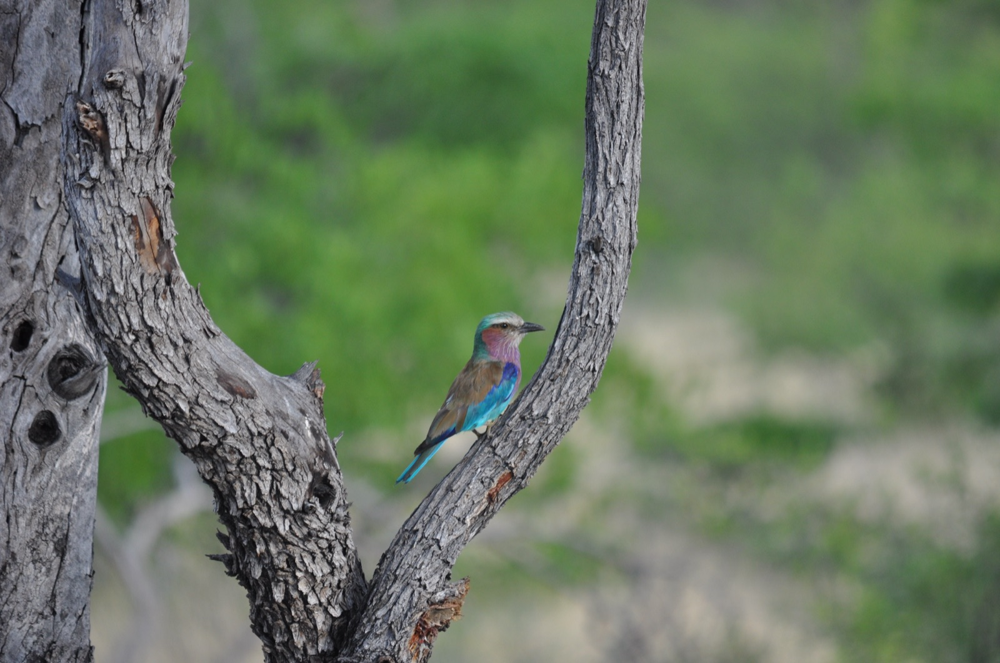

Die Gevoel
'n Plek waar die wêreld stil word
Hier, bo op die koppie, is dit net jy en die stilte. Geen verkeer, geen geraas, geen haas. Net die wind deur die gras, die son wat oor die vlakte sak, en die onuitgesproke belofte van vryheid wat net Afrika se wildernis kan bied.
Sielsoord is meer as 'n stuk aarde. Dit is 'n erfenis — 'n plek wat deur generasies van 'n familie lief gehou is, en nou wag om nuwe stories te dra.
Koppie 1 — Ons Koppie
Sielsrus
Ons familie se tuis. Die jaghuis bo-op die hoogste punt.
Koppies 2–7 — Beskikbaar
Ses koppies. Elkeen R4 miljoen.
Ligging
Naby Etosha. Ver van alles.
Sielsoord lê in noordelike Namibië, op die drumpel van een van Afrika se grootste wildreservate. Etosha Nasionale Park is jou buurman — die groot wildtog beweeg vrylik in die omgewing.
Die D2695 gruispad gee jou maklike toegang reg tot by die plaas. Jy is naby genoeg aan beskawing, maar ver genoeg dat die sterre nog onbesoedeld skitter.
- ◉ Reg langs Etosha Nasionale Wildreservaat
- ◉ 2 boreholes met volop water op die plaas
- ◉ D2695 gruisweg — goeie toegang
- ◉ Volop wild — kudu, gemsbok, springbok
Voëlkyk
'n Voëlkyker se parays
Met twee boreholes en 'n mengsel van savanne, doringveld en rotsagtige koppies, is Sielsoord 'n Magnete vir meer as 300 voëlspesies.
Die beste voëlkyk-ure is vroegoggend en laatmiddag by die boreholes.
- 🐦 Lila-bors hadida — Namibië se nasionale voël
- 🐦 Geelbek-neushoringvoëls oral in die bome
- 🐦 Roofvoëls soos arende en valke bo die koppies
- 🐦 Trekvoëls van Europa en Asië in die somer
